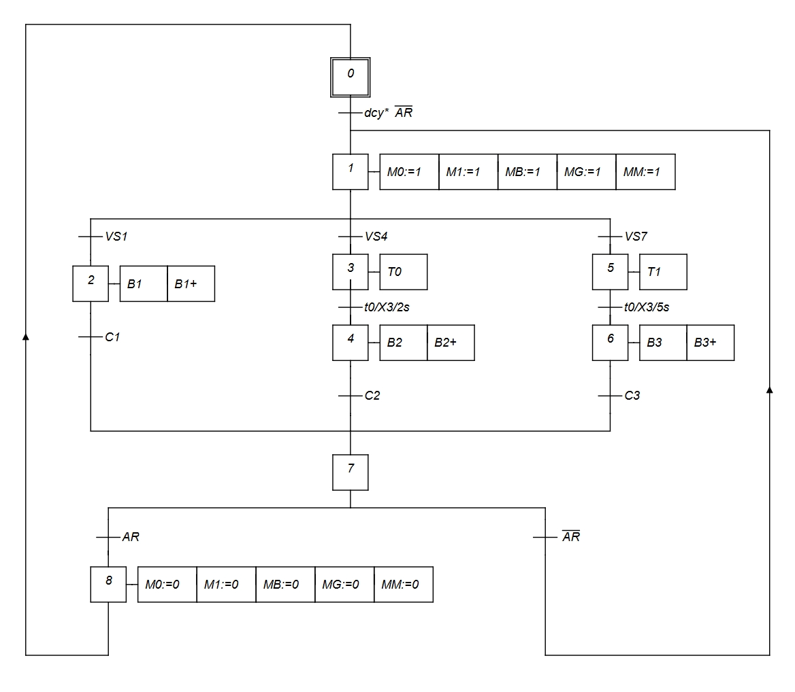
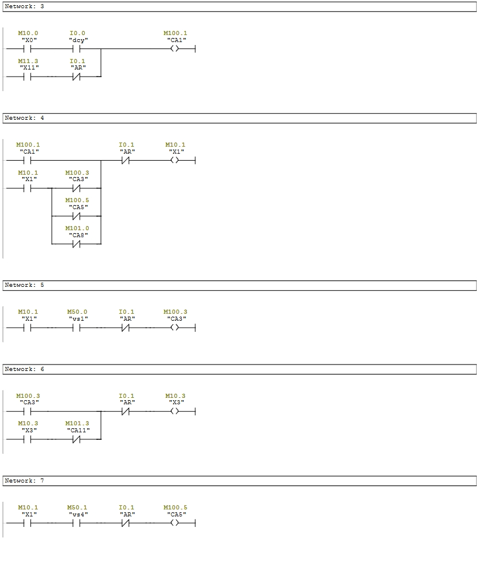
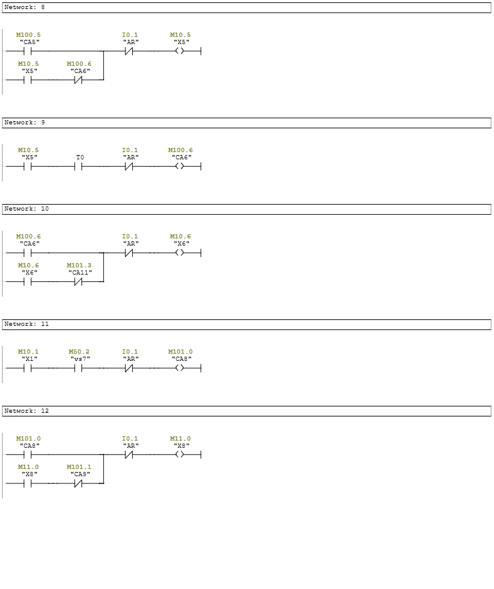
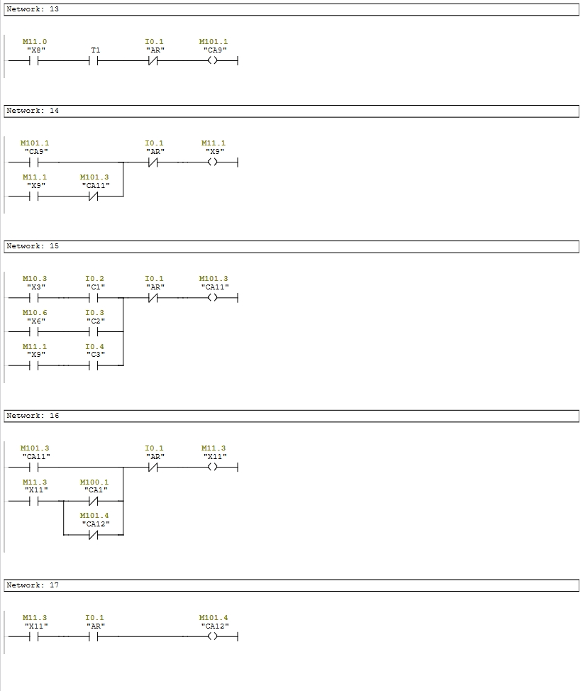
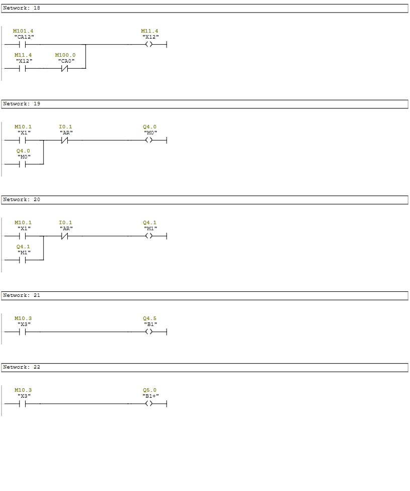
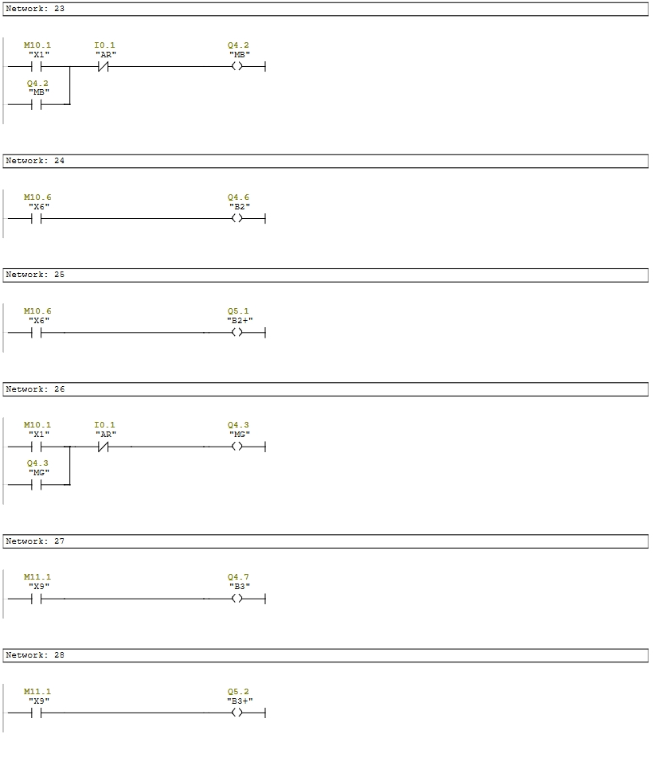
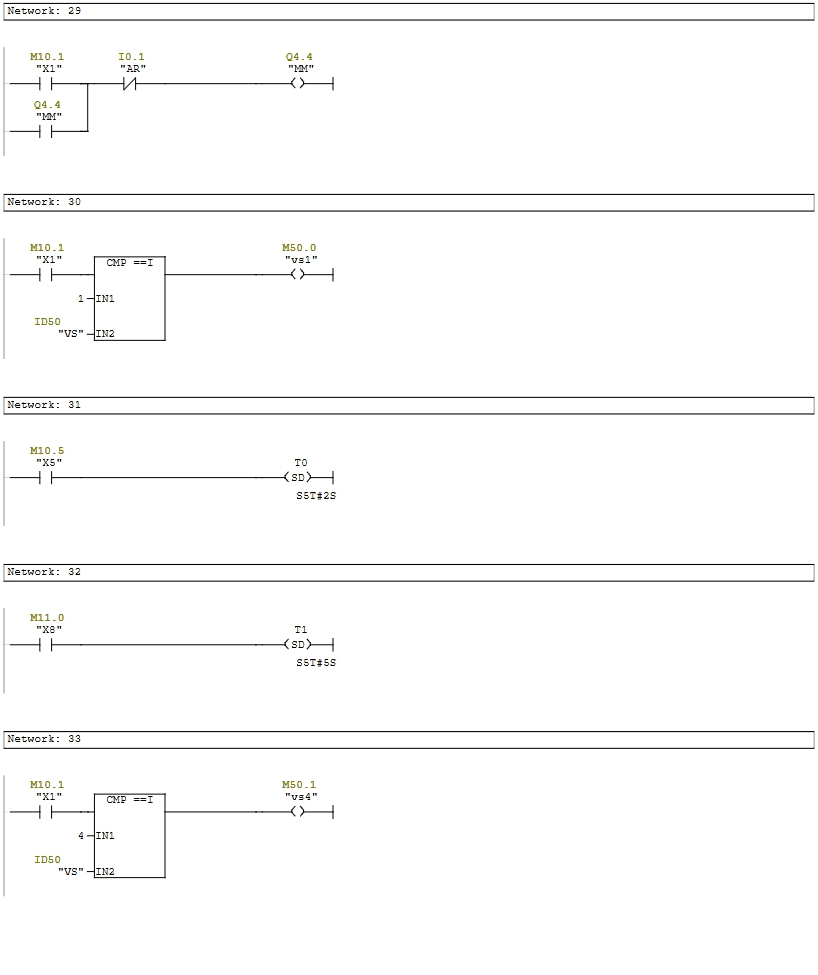
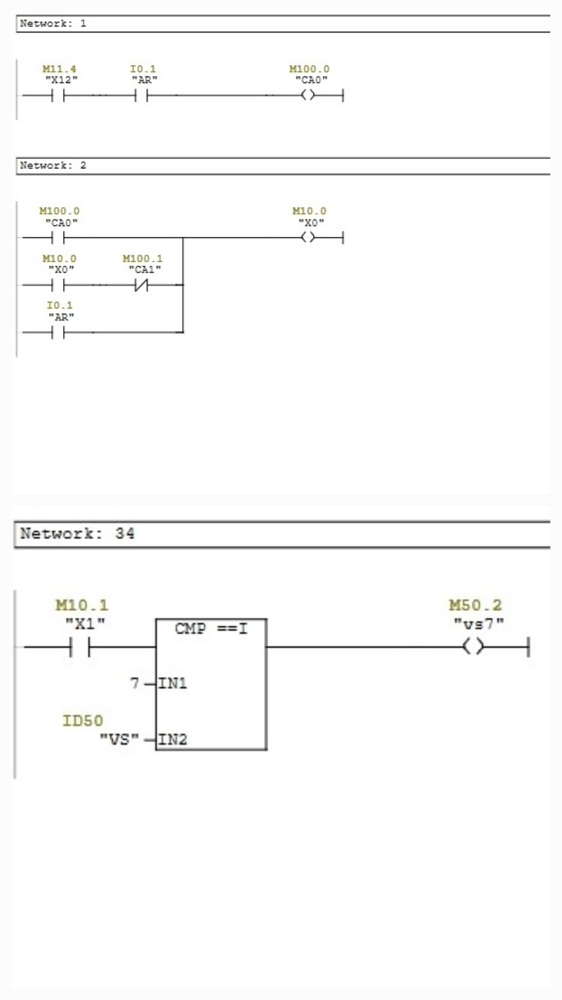

Industrial automation project developed using Siemens STEP 7 (LAD) and Factory I/O
The Automatic Color Sorting and Storage System is an industrial automation project developed using Siemens STEP 7 (LAD) and Factory I/O. The system automatically identifies the color of workpieces traveling on a conveyor belt, sorts them accordingly, and stores them in designated locations using PLC-based control logic.
Manual sorting and storage of products are repetitive, time-consuming, and susceptible to human errors. This project automates the entire process to improve efficiency, accuracy, and production consistency.
Automate the color sorting process and store products in their designated locations.
Reduce manual intervention.
Improve production efficiency and accuracy.
Validate the PLC program through Factory I/O simulation.
PLC-Based Industrial Automation
Siemens STEP 7, Factory I/O
Ladder Diagram (LAD)
Color Sensor
Conveyor Belt
GRAFCET → STEP 7 (LAD) → Factory I/O
In Progress
Executes the ladder logic program.
Transports workpieces through the system.
Detects the color of each workpiece.
Detect the position of workpieces.
Control system operation.
Sort workpieces according to their detected color.
Developed the sequential control logic of the sorting process.

Ladder Logic program using Siemens STEP 7.







Demonstration of the automated sort by color station using Factory io.
The complete sorting and storage process was executed automatically.
Each workpiece was correctly identified according to its color.
The Ladder Logic program was successfully tested using Siemens STEP 7 and Factory I/O.
The system processed consecutive workpieces automatically without operator intervention.
Incorrect sorting caused by overlapping workpieces
When multiple workpieces were detected in succession, a downstream pivot arm could be activated before the previous workpiece had passed it. This caused the first workpiece to be diverted onto the wrong conveyor. To solve this, individual time delays were added to each pivot arm, ensuring that every actuator was activated only when its corresponding workpiece reached the correct sorting position.